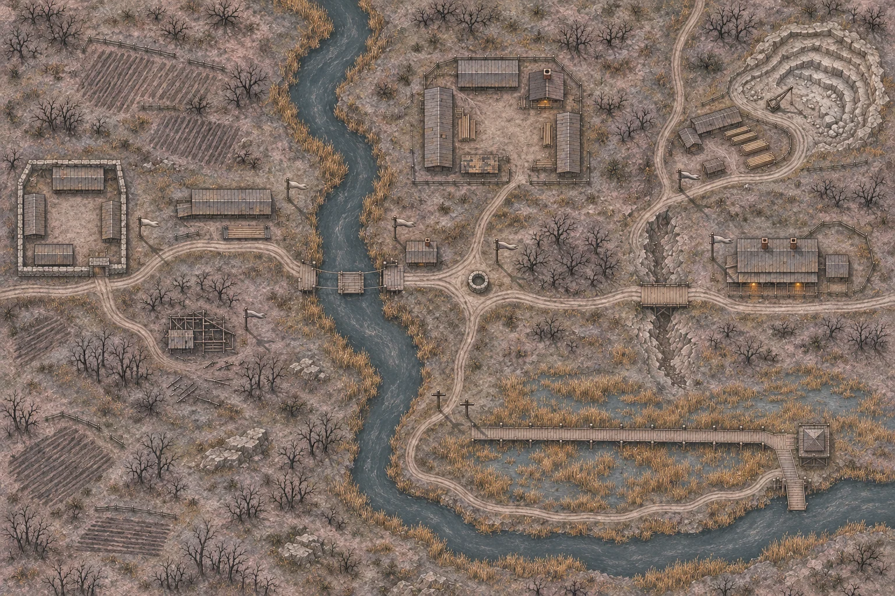
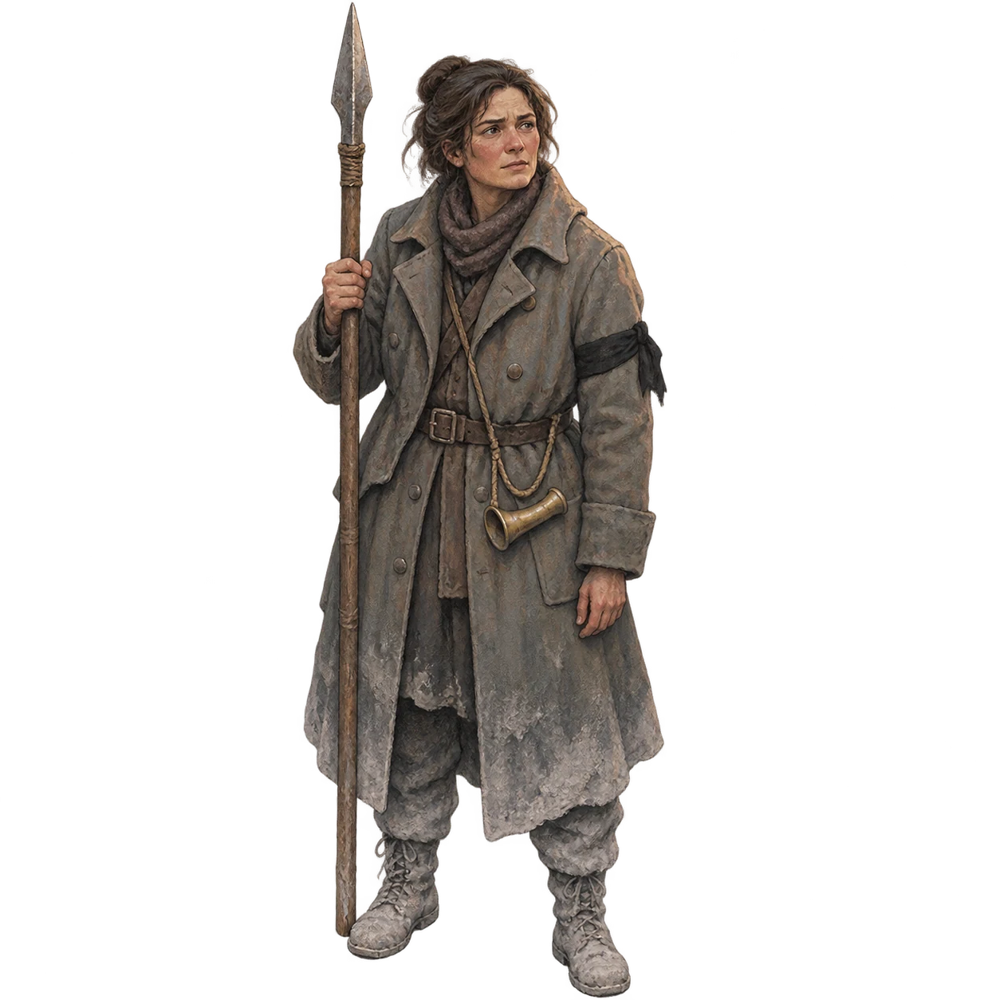
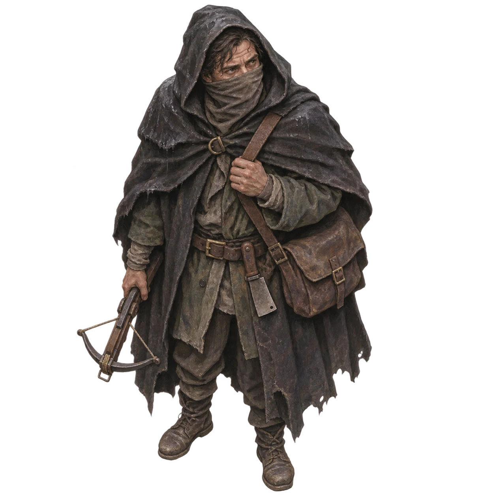
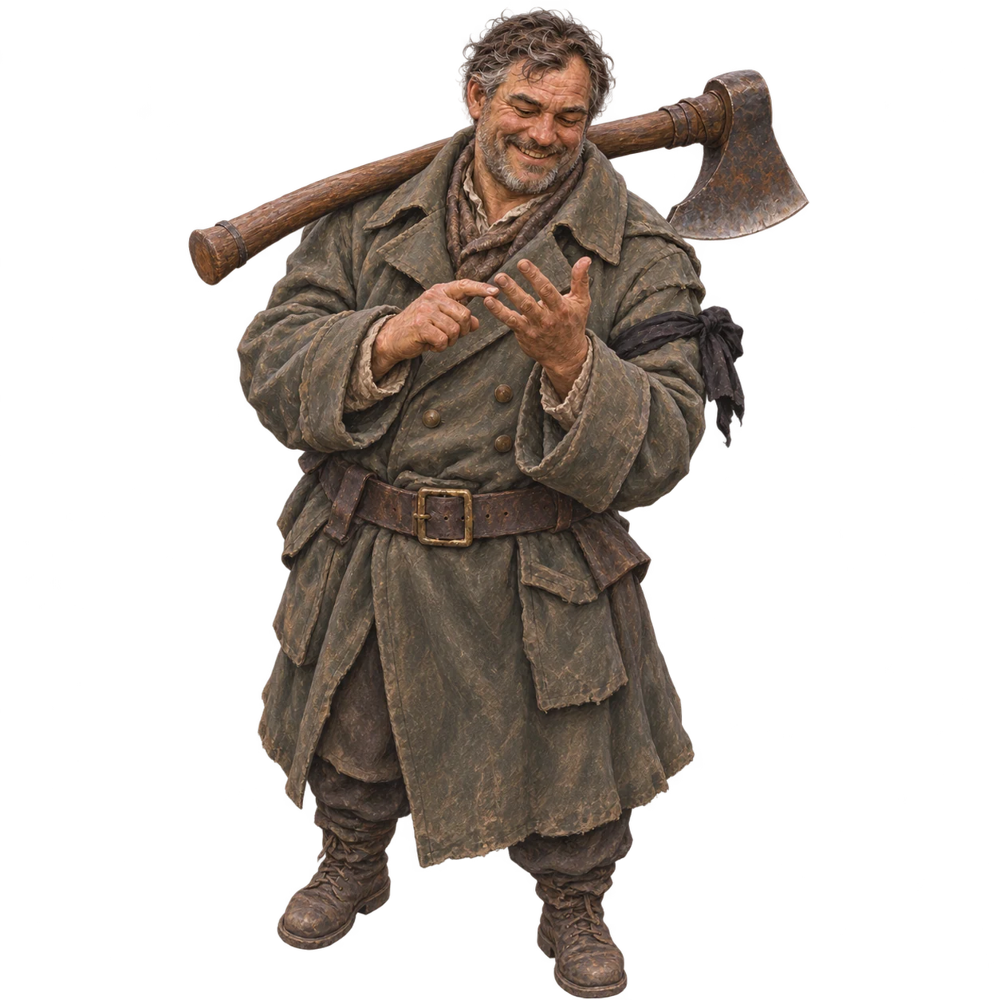

Завещание Пепла
Карты и фигурки ведущего
Игровой комплект
5 игроков · 6 игроков · 7 игроков · 8 игроков
Карта кампании

Поля боя


Герои


Персонажи ведущего


Противники


Ветеран охраны дорог 2Ветеран охраны дорог 1Ветеран охраны у парома 2Заставщик с жетоном 1Ветеран охраны у парома 1Дозорный охраны дорог 4Дозорный охраны дорог 5Дозорный охраны дорог 6Стрелок из камышей 1Дозорный охраны дорог 2Дозорный охраны дорог 3Ветеран охраны у парома 3Дозорный охраны дорог 1

Заставщик с жетоном 4Стрелок из камышей 4Стрелок из камышей 3Ночной наёмник 1Ночной наёмник 4Ночной наёмник 2Заставщик с жетоном 3Заставщик с жетоном 3Заставщик с жетоном 2Ночной наёмник 3Стрелок из камышей 3Стрелок из камышей 2

Кондрат Обух